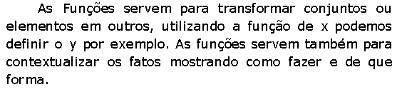

Funções

Funções por meio de Conjuntos
Definição Formal e Notação
Outros tipos de funções
Domínio e Imagem
Função AFIM
Domínio e Imagem
Valor da Função AFIM
Gráfico
Função Constante
Determinação da Lei da Função
Intersecção de duas retas
Função Linear e a Proporcionalidade